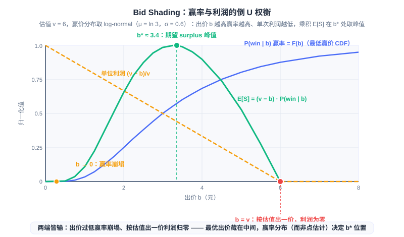

Smart Bidding and Budget Control
📝 Before You Continue: This chapter requires reading 12.2 (eCPM and Billing Models) first — the bid formulas are built on the eCPM convention — as well as 12.3 (Auction Mechanisms) — the motivation for bid shading comes directly from the return to first-price auctions. The "prediction accuracy" motif planted throughout this chapter is taken up head-on in 12.5 (Estimation Bias and Calibration).
The end of 12.3 left a cliffhanger: after the return to first-price auctions, the mechanism no longer "pays only the second price" on the advertiser's behalf, and bidding strategy thereby became the DSP's core competency. But bidding is far more than the single move of "pressing down the price under first-price" — it is a complete decision pipeline: the advertiser says what they want (the goal), the model estimates what the traffic is worth (the value), the budget decides how much can be spent today (the constraint), and the mechanism decides how the bid should be submitted (adaptation). Miscalculate any single link in this pipeline, and the number finally handed to the exchange is wrong.
This chapter takes that pipeline apart layer by layer. We first look at how the advertiser's goal becomes a per-impression bid (oCPC/oCPM conversion bidding), then how the budget gets spent smoothly across a day (Budget Pacing), then the statistical problem of "how far down to shade the bid" in a first-price market (Bid Shading), and finally we string all the links into the complete decision chain of a bid request. You will see: every module in this chapter is, in essence, an application of "prediction" and "control" to money.
After reading this chapter, you will be able to:
- Write down the core conversion-bidding formula , and explain how oCPM transfers conversion risk from the advertiser to the platform
- Explain the motivation of budget pacing and the reference trajectory , and contrast probabilistic throttling with bid scaling as two implementations
- Use the feedback-control / PID-controller perspective to explain the tuning logic of the pacing multiplier , and why engineering practice universally drops the D term
- Derive the logic of expected surplus maximization under first-price auctions, and describe how Verizon's DDN uses a log-normal distribution and Golden Section Search to find the optimal bid in milliseconds
- Draw the complete decision chain of a bid request from targeting to bid submission, trace how error propagates through the chain, and complete 5 tiered practice problems
12.4.0 From Manual Bidding to Smart Bidding
We first review the historical division of labor in bidding. In the GFP era, bidding lay entirely in the hands of advertisers (or their bidding agents): you saw that never-converging chase in 12.3.1 — bidding is an iteration of best-response functions, and even advertisers watching the market around the clock could not keep up. Even in the GSP era, "submitting a suitable CPC bid" still required advertisers to answer a question they were ill-equipped to answer: how much is this click worth? The answer depends on click-through rate, conversion rate, and average order value — data held mostly by the platform. Information asymmetry decides who owns the bidding rights: whoever understands the traffic better should be the one bidding.
So the bidding stack grew layer by layer on the platform side, eventually forming the standard shape of a modern DSP. The entire chain can be summarized as a relay of four links: advertiser goal (target CPA / ROI) → value estimation (pCTR × pCVR × targetCPA converted into the value of a single impression) → budget constraint (pacing controls the spending rhythm) → market mechanism adaptation (bid shading adapts to the first-price market). Note that these four links answer four different questions: what is wanted, what it is worth, how fast to spend, and how to bid — they are coupled with one another, yet each is owned by a different module and a different algorithm.
Each layer in the figure consumes only the output of the layer above and its own external inputs: the value-estimation layer multiplies the advertiser's targetCPA with the pCTR/pCVR predictions; the bid-shading layer plays the value bid against the win-price distribution; the pacing layer multiplies the shaded bid by a budget multiplier. The point of layering is engineering isolation — each module can iterate and be monitored independently — but the price is that error also propagates down the arrows layer by layer, a point we confront directly in 12.4.4.
🧠 Mental Model: From "Driving Yourself" to "Chauffeur with Navigation"
Manual bidding is like driving yourself: the advertiser grips the wheel (the bid), guesses the road conditions (traffic quality) from experience (industry-average CPC), and floors the accelerator (raises the bid) whenever there is a traffic jam (fierce competition). Smart bidding is a chauffeur with navigation: the advertiser only reports the destination (target CPA), and the platform's models handle route-finding (pCTR/pCVR estimation), speed control (pacing), and ramp selection (bid shading). You do not need to know how to drive, but you had better state the destination clearly — report the wrong target CPA, and the chauffeur will faithfully deliver you to the wrong place.
The next four sections of this chapter unfold along this stack: 12.4.1 covers how a goal becomes a value (the first two layers), 12.4.2 the budget constraint (the fourth layer), 12.4.3 mechanism adaptation (the third layer), and 12.4.4 screws them back together into a whole.
12.4.1 Conversion Bidding oCPC/oCPM: The Platform Trades Predictive Power for Pricing Power
The first leap of the bidding stack upgrades the advertiser's input from "how much to pay per click" to "how much a conversion is worth." The bid formula of conversion bidding (oCPC / oCPM, optimized CPC/CPM) is a natural extension of the 12.2 eCPM convention: since bidding is by conversion, the conversion cost is converted back into revenue per thousand impressions —
where (in practice, the target CPA) is the advertiser-declared target cost per conversion, and pCTR and pCVR come from the platform's predictive models. The formula reads plainly: one thousand impressions × the click probability per impression × the conversion probability per click × the value per conversion equals the expected revenue of those thousand impressions. The advertiser reports a single number (the target CPA), and the specific bid for every impression is managed by the platform on their behalf — this is the core shape of Smart Bidding, previewed in 12.3.6.
The weight of this move shows only when placed in the risk-attribution lineage of 12.2. The conclusion of 12.2.1: the closer the billing unit is to conversion, the more risk the platform bears — under CPM all risk is on the advertiser; under CPC the platform manages its own share of risk with CTR prediction; under CPA/CPS the platform takes over both the decisions and the risk. oCPM is precisely the endpoint of this chain: the platform takes over conversion risk, and the precondition for taking it over is that pCVR estimation is accurate enough. With accurate prediction, the platform dares to promise "conversion costs on target"; with inaccurate prediction, the platform pays real money for overvalued traffic. Extending the phrasing of 12.2: this is the platform trading predictive power for pricing power — the more accurate the prediction, the deeper the bidding layers it can manage on the advertiser's behalf, and the more control it takes over from the advertiser.
Industrial practice designed a two-phase rollout process for this. The cold-start phase stays with plain CPC bidding: a new ad has no conversion statistics, the pCVR model has no confidence in it, and bidding by conversion at that point would be betting blind; CPC bidding first helps the ad accumulate conversion data. Once conversion samples are sufficient and the model is confident, the switch to conversion bidding happens. You will notice this is exactly the bidding-layer landing of the 12.2.4 cold-start back-off and E&E ideas — first use cheap exploration to accumulate statistics, then hand over to the optimal policy once confident.
Analysis: Conversion bidding pushes the absolute accuracy of prediction into the billing link. Under oCPM, pCTR × pCVR determines not only ranking but also directly how much the platform charges the advertiser (billed by impression, optimized toward conversion goals): systematically overestimate pCVR, and the platform cannot meet the target cost while the advertiser overspends; systematically underestimate it, and the advertiser's traffic shrinks while the platform's revenue suffers. Alibaba's systematic account (Gai et al., SIGIR 2022) states explicitly: inaccurate estimation hurts user experience, advertiser marketing goals, and platform revenue all at once — this is not a matter of ranking quality, but of "miscomputing money."
12.4.2 Budget Control (Budget Pacing): Spending the Money Slowly and Accurately
With the value bid in place, one constraint remains: the budget. Advertisers usually set a daily budget, while traffic is distributed highly unevenly across a day — the evening peak far exceeds the small hours in both volume and quality. What happens if the budget is left unmanaged? High-bidding ads burn through the budget between midnight and the morning session, because at that hour they bid the highest on every impression; by the time the high-conversion traffic of the evening peak arrives, the ad is already "off duty." What budget pacing solves is exactly this problem: spend the budget evenly across the delivery period — avoiding front-loaded spending that misses the premium evening-peak traffic, while keeping the ad continuously online to reach a wider audience (Xu et al., KDD 2015). Spending too slowly is equally harmful: an unspent budget is traffic and conversions given up for nothing.
Smooth spending needs a mathematical expression of "what counts as even," namely the reference trajectory:
where is the total target spend (or impression volume) and is the length of the delivery period. It is a straight line from the origin to , meaning "spending progress stays in sync with time progress": once 10 a.m. has passed 40% of the day, 40% of the budget should be spent. The deviation of the actual spend curve from is the control error, and the pacing system's job is to make bite tightly onto .
There are two engineering routes to smoothness. Probabilistic throttling: for each bid request, participate with probability and give up outright with probability — LinkedIn's budget pacing system (Agarwal et al., KDD 2014) takes this route; it is easy to implement, but "giving up" is a 0/1 hard gate that discards the option of "lowering the bid and staying in." Bid scaling: use a pacing multiplier to scale the bid, — preserving participation at the cost of per-auction competitiveness; when the budget is tight, pressing down makes the same budget last longer, and it naturally avoids impressions where "an inflated bid pays for nothing." Both routes are deployed in industry, and one can also gate only "whether to enter the auction"; bid scaling couples more deeply with the bidding logic, but that is precisely what makes pacing a layer of the bidding stack rather than a bolt-on rate limiter.

Where the two routes converge is the control structure: this is a standard feedback control loop. The error (the difference between the reference trajectory and actual spend) is fed to the controller; the controller outputs a control action; the control action acts on the bid (or the participation probability); the actual spend is then observed back and compared with the reference. Industry universally adopts the PID controller (Proportional–Integral–Derivative Controller) framework for tuning, with each of the three terms carrying clear semantics:
- P (Proportional): immediate response — adjust proportionally the moment an error appears, but pure P control leaves a steady-state error;
- I (Integral): eliminates the steady-state error — correct for as long as the error has accumulated; the further behind the budget, the harder the correction;
- D (Derivative): anticipatory damping — the rate of change of the error provides early warning of "about to overspend / overshoot."
Engineering practice universally drops the D term and uses PI control only: ad impression requests are discrete step signals, and the D term is extremely sensitive to steps and noise, injecting amplified noise into the bid. The PI output is then squashed by a sigmoid into , landing exactly in the value range of the pacing multiplier (or participation probability). Going further, the error can take the log-ratio form , so that delivery plans of different scales can share the same set of control gains — a small plan with a daily budget of one hundred yuan and a large plan with a daily budget of one million can both converge stably with the same parameters.
🧠 Mental Model: Cruise Control
Budget pacing is the cruise control of ad delivery: set the target speed (the reference trajectory), and the system continuously compares the current speed (actual spend) with the target, automatically pressing the accelerator (α rises) or easing off (α pressed down). P is "giving it some gas the moment the speed drops," I is "staying on the gas as long as we have been slow," D is "sensing an impending overspeed and easing off in advance" — but on a bumpy road (discrete bid requests), the D foot only stamps the bumps into convulsions, so engineers removed it altogether.
This technical route has a string of industrial landmarks worth remembering. Yahoo's Smart Pacing (Xu et al., KDD 2015) learns a delivery rhythm for each campaign, combining offline (initialization from historical data) with online (real-time updates), and was deployed and experimentally validated in a real DSP system, simultaneously improving smoothness and performance goals; earlier, Lee et al. (ADKDD 2013) studied bid optimization for smooth budget delivery under RTB. Zhang et al. (WSDM 2016) were the first to introduce PID control into RTB bidding; Verizon Media's DSP uses integral control plus feedforward compensation; Twitter/X built pacing as a standalone service running PID control internally; Roku adjusts "pickiness" on a five-minute cycle; Adobe and Google protect their respective PID bidding engines with patents. Control theory quietly scored a cross-industry victory here — the languages differ (rhythm, multiplier, pickiness), but the kernel is the same feedback loop.
Analysis: Pacing's control period is usually at the minute level rather than per-request: spend statistics are delayed, and improperly tuned control gains cause oscillation (the budget alternately tightening and loosening). More subtle is the coupling between pacing and bidding — the multiplier pressing down the bid changes the distribution of won traffic (the share of cheap traffic rises), which in turn changes the actual spend rate, forming a loop-within-a-loop pathway. Treating pacing as a rate limiter independent of bidding is the most common misreading of this layer.
12.4.3 Bid Shading Under First-Price Auctions: The Inverted-U Trade-off Between Win Rate and Profit
Now for the last question planted in 12.3.5: how should the bid actually be submitted in a first-price market. Under a first-price auction, "you pay what you bid"; if your bid exactly equals the valuation , then the moment you win the auction the profit — winning is working for nothing. So a rational bid must be shaded downward: press the bid below the valuation. But press too low and you lose auctions you should have won. This is the core trade-off of bid shading: win rate and profit trade off against each other, and we are looking for the maximum of their product.
Formally, let the value of an impression opportunity to you be (the value bid given by the upper layers of the bidding stack), and let your bid be ; the expected surplus is:
is the win rate at bid . The question is: where does this win-rate function come from? Here lies the insight that makes or breaks the method: estimate the distribution of the win rate, not a point estimate of the win rate. The win rate is determined by competitors' bids — specifically, by the distribution of the minimum winning price (the price that just barely wins this auction): . A point estimate (predict a "market price" and then discount it) can deviate severely on any single auction; distributional modeling (estimating the whole CDF) naturally expresses the uncertainty of the competitive landscape and is more robust to across-auction fluctuation.

The three curves in the figure spell out the trade-off: the blue win-rate curve rises monotonically with the bid, the yellow unit-profit curve falls monotonically with the bid, and the green product is inverted-U shaped — both ends lose ( collapses the win rate, zeroes the profit), and the optimal bid hides in the middle. The interactive simulator below lets you drag the valuation and the bid with your own hands and experience this curve along a four-step script.
Follow the script in order: scenario one first verifies that "bidding the valuation yields zero profit"; scenario two shows how over-shading collapses the win rate; scenario three lands on the surplus peak; scenario four introduces valuation noise and shows why the flat region near the peak means robustness. After finishing, drag the sliders to explore freely, and notice that always lands in the interior of , never on the boundary.
The most complete template of industrial implementation is Verizon Media's DDN (Deep Distribution Network) (Zhou et al., KDD 2021). The network directly outputs the distribution parameters of the minimum winning price, with the log-normal distribution fitting the long tail of win prices best; training uses maximum likelihood on the complete observations of open auctions, and survival analysis on the censored data of sealed auctions — you observe only "whether you won" and "the minimum winning price when you won"; in lost auctions the true winning price is never visible, and this is exactly the censoring structure. Based on the distribution's mathematical properties, DDN proves that the surplus function has a unique global optimum, so Golden Section Search, a gradient-free extremum search, can find in milliseconds — this optimization must run once for every auction, and speed is everything.
💡 Key Insight: DDN serves hundreds of billions of requests per day in Verizon's production DSP. Online A/B results: surplus up 14.3%, with advertiser ROI improving in sync — +2.4% on the CPM and CPC convention, +8.6% on the CPA convention. Note that both directions of improvement happen at once: bid shading is not "the platform giving away margin"; pressing down the bid both lowers the winner's payment (the advertiser's side) and raises the profit per won auction (the DSP's side), provided the pressing is accurate.
System engineering constraints dictate the shape of this method. A DSP's total response budget for a bid request is about 20ms, with targeting, pCTR/pCVR estimation, internal auctioning, bid shading, and pacing executing serially, each module's latency allowance squeezed hard; DDN therefore adopts an architecture of offline training once per day with model files loaded onto the online bidder, compressing the online cost down to one distribution-parameter query plus one Golden Section Search. Finally, when the estimation noise in both the valuation and the competition distribution is large, point-estimate-style optimization destabilizes — follow-up work by Stanford and Yahoo (Qu et al., 2024) uses a KL-divergence uncertainty set to construct max-min distributionally robust optimization, making the bid immune to estimation error; we mention this line in one sentence, as the idea is of a piece with the noise propagation of 12.4.4.
Analysis: The methodological transfer of bid shading deserves attention: it turns "a pricing problem" into "distribution estimation + one-dimensional optimization." Distribution estimation (log-normal + censoring handling) is done offline; one-dimensional optimization (Golden Section Search) is done online — this "heavy offline, light online" split is a universal architectural pattern for all millisecond-level decision systems, and you saw the same logic in the 12.2.4 trade-off between dynamic features and online learning.
12.4.4 Bidding Stack Integration: The Complete Decision Chain of a Bid Request
With all four layers in place, let a real bid request walk the full course. After the request arrives at the DSP from the ADX, the decision chain runs in order: targeting filter (the advertiser's audience, geo, and dayparting conditions first screen out irrelevant campaigns) → pCTR/pCVR estimation (estimate click and conversion probabilities for each candidate) → value bid ( converts what this impression is worth to this advertiser) → bid shading (play the value bid against the win-price distribution, press down to the optimal ) → pacing multiplier (the budget constraint multiplies on ) → submit the bid. All the work from request to bid must complete serially within about 20ms.
Modularity brings iteration efficiency, but also an error-propagation chain that must be faced squarely. If pCTR is overestimated by 10%, the value bid is 10% too high; bid shading optimizes surplus with a contaminated , the optimum shifts wholesale, and the pacing's spend rate is distorted in turn — an error in any single link propagates losslessly to the final bid. More troublesome still is the two-way coupling: the pacing multiplier changes the distribution of won traffic, and that distribution is exactly the training-data source for bid shading's win-price estimation. This is why the DDN paper stresses that the shading algorithm must be resilient to the noise and changes of upstream modules — also a second motivation for the distributionally robust idea at the end of 12.4.3.
🧠 Mental Model: The Telephone Game
The bidding stack is like a line of people passing a message: the goal layer passes "each conversion is worth 40 yuan" to the value layer; the value layer converts it into "this impression is worth 0.04 yuan" and passes it to the shading layer; the shading layer presses it to "bid 0.028 yuan" and passes it to the pacing layer; the pacing layer multiplies on a discount and hands it out. If any one person in the line mishears by 10%, everyone downstream faithfully amplifies or shrinks that 10% — the final number handed out looks precise to three decimal places, but it has been crooked since the first handoff. There is no such thing as "locally correct" in this chain, only "globally calibrated."
With this, the jigsaw of this chapter, 12.2, and 12.3 can be closed. 12.2 gave the system's units of measure (eCPM) and the constitution of risk attribution; 12.3 gave the market mechanism (how the auction allocates and charges); this chapter gave the bidding stack that glues the two together — goals become values, values adapt to the mechanism, and the mechanism is constrained by the budget. And the single thread running through all three chapters now surfaces: every layer of this chain consumes the output of prediction, and prediction's "absolute accuracy" rather than "relative ranking" is the foundation of the entire chain. Systematic bias in pCTR/pCVR makes the platform miscompute money, makes shading press to the wrong price, and makes pacing chase the wrong trajectory. Why prediction drifts, and how bias is measured and corrected — that is the subject of 12.5 (Estimation Bias and Calibration), the closing link of this Part.
⚠️ Common Mistakes in 12.4
| # | Mistake | Example | Why It's Wrong | Fix |
|---|---|---|---|---|
| 1 | Treating oCPM as a billing model rather than a risk transfer | "oCPM is just paying per impression, right?" | The billing convention is still CPM; the real change is the platform taking over conversion risk and managing the bid — the substantive leap from CPC to CPA in 12.2's risk-attribution lineage | Understand it as "the platform trades pCVR predictive power for bid pricing power"; if prediction is inaccurate, the platform loses money itself |
| 2 | Thinking pacing is just a rate limiter | "Budget spending too fast? Randomly drop requests" | The pacing multiplier directly changes the bid, which in turn changes the distribution of won traffic — two-way coupling with the bidding logic | Model it with a feedback-control view: reference trajectory + error + PI controller closed loop |
| 3 | Believing bid shading is a pure loss | "Pressing down the bid just means earning less" | Pressing the bid simultaneously raises the profit per won auction and lowers the payment; DDN's online surplus was +14.3% with advertiser ROI improving in sync | Remember the optimization target is maximizing the product , not maximizing the win rate |
| 4 | Using a point estimate of the win rate for bid shading | "Predict the average market price and take 20% off" | The winning price of a single auction fluctuates wildly; a point estimate deviates systematically at the individual level | Estimate the distribution (CDF) of the minimum winning price, with log-normal + censored-data handling |
| 5 | Switching new ads to conversion bidding at launch | "oCPC works well, use it from cold start" | pCVR has zero confidence for ads with no conversion samples; managing the bid blind is gambling | Follow the two-phase rollout: CPC bidding accumulates conversion data, switch after the model is confident |
| 6 | Thinking dropping the D term is engineering laziness | "Only a full PID is professional" | Impression requests are discrete step signals; the D term amplifies noise and injects jitter into the bid | The industrial standard is PI: P for immediate response + I to remove the steady-state error, output squashed by sigmoid |
Chapter Summary
📌 Key Takeaways
| Concept | Key Points | Why It Matters |
|---|---|---|
| Bidding stack panorama | Goal (CPA/ROI) → value estimation → budget constraint (pacing) → mechanism adaptation (shading), a four-layer relay | The unified mental model of modern smart bidding; layers iterate independently but errors propagate down layer by layer |
| oCPC/oCPM | ; the platform manages the bid; two-phase cold start | The platform trades predictive power for pricing power, moving conversion risk from the advertiser onto itself |
| Budget Pacing | Reference trajectory ; probabilistic throttling vs bid scaling ; PI control + sigmoid | Avoids front-loaded spending missing premium traffic; the standard landing of feedback control in ad systems |
| Bid Shading | inverted-U peak; estimate the win-price distribution, not a point estimate | The DSP's core competency in the first-price era; improves profit and advertiser ROI simultaneously |
| DDN (KDD'21) | Log-normal win-price distribution, survival analysis for censoring, Golden Section Search finds in milliseconds; surplus +14.3% | The "heavy offline, light online" architectural paradigm, serving hundreds of billions of requests daily |
| Error propagation chain | Targeting → estimation → value → shading → pacing in series; bias in any link reaches the final bid directly | Sets up 12.5: prediction's absolute accuracy is the foundation of the whole chain |
❓ FAQ
Q1: What is the difference between oCPC and oCPM?
A: The optimization goal is the same (the platform manages the bid by target CPA); the difference lies in the billing convention and the risk details: oCPC bills by click, oCPM bills by impression. Under oCPM the platform is responsible for the full "impression → conversion" chain, a more thorough takeover of risk — which requires pCVR estimation to be accurate enough, or the platform pays for overvalued traffic. The two share the same bid formula; only the billing point differs.
Q2: Probabilistic throttling or bid scaling — which to choose?
A: Probabilistic throttling (the LinkedIn route) is simple to implement and direct to control, but the 0/1 gate discards the option of "lowering the price and staying in"; bid scaling () preserves participation and can naturally avoid inflated impressions when the budget is tight, but couples more deeply with the bidding logic. Both are deployed in industry, and hybrid schemes (gating + scaling) are common too; the tighter the budget and the stronger the traffic heterogeneity, the more pronounced bid scaling's advantage.
Q3: Why must bid shading use a distribution instead of a point estimate?
A: The minimum winning price of a single auction fluctuates wildly; a point estimate gives only the "average market price" and deviates systematically at the individual level — discounting off the average overbids on cheap traffic (paying for nothing) and underbids on expensive traffic (missing out). A distribution (CDF) fully characterizes the uncertainty of the competitive landscape, and the optimization of is naturally robust to across-auction fluctuation; DDN's online gain (surplus +14.3%) was likewise achieved precisely after replacing the point-estimate baseline with a distribution.
🔗 Connections to Other Chapters
- 12.2 (eCPM and billing models) — this chapter's bid formula is built entirely on the eCPM convention; oCPM's risk transfer is the endpoint of 12.2's risk-attribution lineage (CPM→CPC→CPA), and the two-phase cold start is the bidding-layer landing of 12.2.4's E&E and back-off ideas.
- 12.3 (auction mechanisms) — the return to first-price (12.3.5) gave rise to all of bid shading's problem consciousness; "bidding the valuation yields zero profit" comes directly from first-price's "you pay what you bid" pricing rule.
- 12.5 (estimation bias and calibration) — the motif planted repeatedly in this chapter unfolds head-on there: systematic pCTR/pCVR bias propagates down the bidding stack; miscomputing the ranking is a small matter, miscomputing money is the big one.
- 8.3 (end-to-end generative advertising, EGA) — this chapter's bidding stack is the pinnacle of the "mechanism as post-processing rule" form; EGA learns allocation and payment end to end into the model, and can be viewed as a paradigm-level compression of this stack.
- 3.x (precise preference prediction) — pCTR/pCVR model structures originate from ranking models, but once inside the bidding stack, absolute accuracy (calibration) becomes a hard constraint — advertising's unique transformation of recommendation models.
Practice Problems
Work through all problems in order — they get progressively harder. Each has a complete solution you can reveal after trying it yourself.
Problem 12.4.1 — oCPM Bid Computation 🟢 Easy
An e-commerce campaign sets target CPA = 40 yuan. For a certain impression, the platform estimates pCTR = 2% and pCVR = 5%. (a) Compute the eCPM bid for this impression. (b) If the advertiser raises the target CPA to 50 yuan, how does the bid change? What role does this show the target CPA playing? (c) The platform's pCVR is systematically overestimated by a factor of two (true 2.5%, estimated 5%); what consequences does this bring?
💡 Solution (click to reveal)
Approach: Apply .
- (a) yuan (per thousand impressions).
- (b) The bid rises linearly to yuan. The target CPA is the only advertiser-supplied "value anchor" in the bidding stack: it multiplies ahead of all predicted probabilities and directly scales the entire bid — what the advertiser reports is not a bid but a value yardstick.
- (c) The true expected eCPM is only yuan, yet the platform bids 40 and (under oCPM) bills the advertiser at the inflated convention: the advertiser's actual conversion cost doubles versus target; the platform collects more short-term but the advertiser churns. This is exactly what "prediction accuracy directly determines billing fairness" means.
Key points:
- If any single factor of the bid formula is off by a factor of two, the bid is off by a factor of two — the linear structure offers no error hedging.
- Under oCPM, the bill for overestimated pCVR is fronted by the advertiser and repaid through the platform's retention rate.
Problem 12.4.2 — Reference Trajectory and Pacing Error 🟢 Easy
A campaign has daily budget yuan and delivery period hours. At noon, the actual cumulative spend is yuan. (a) What is the reference spend at this moment? What are the absolute and relative errors? (b) Should the pacing system raise or lower the multiplier now? Which control term (P or I) is dominating this correction? (c) If the log-ratio error is defined as , compute at this moment.
💡 Solution (click to reveal)
Approach: Reference trajectory , compared pointwise against the actual spend.
- (a) yuan. Absolute error yuan (overspend), relative error .
- (b) Spending is running fast, so should be lowered (pressing down the bid, slowing the wins). Instantaneously the P term is doing the correcting (current error positive → proportional negative adjustment); if the overspend has lasted all morning, the I term has accumulated a positive integral of error and is also continuously pressing down — PI cooperation: P handles the present 20%, I handles the historical arrears.
- (c) . The sign convention "overspend negative, behind positive" does not affect the control direction; the point of the log form is in 12.4.2 — it lets a plan with a 60-yuan daily budget and a plan with a 6-million-yuan daily budget use the same set of gains.
Key points:
- The reference trajectory is the "progress in sync with time" line; all pacing control revolves around biting onto it.
- P responds to the present, I removes the steady-state error — both terms push in the same direction here.
Problem 12.4.3 — Hand-Computing Expected Surplus and the Optimal Bid 🟡 Medium
The valuation is yuan. The minimum winning price distribution is discrete with three points: probability 0.5 at 2 yuan, probability 0.3 at 4 yuan, and probability 0.2 at 6 yuan (a bid exactly equal to the winning price counts as a win). (a) Write down the win-rate function at . (b) Compute the expected surplus at these four bid points; which is optimal? (c) Discuss the behavior of on the interval : is it constant? From this, state where the optimal bid of a discrete distribution falls, and why only the region near the peak of a continuous distribution (such as log-normal) has a "flat zone."
💡 Solution (click to reveal)
Approach: Win rate = the CDF of the winning-price distribution; surplus = unit profit × win rate, computed pointwise.
- (a) ; ; ; .
- (b) Pointwise: : ; : ; : ; : . The optimum is , — better than bidding the valuation (surplus 0) and better than under-shading ().
- (c) On the win rate stays at 0.5 (the next winning-price step, 4, has not been crossed), but the profit decreases with , so falls monotonically from as to as — not flat at all. The optimal bid of a discrete distribution falls on the edge of a win-rate jump step (): stop the moment the new win rate has been bought. A continuous distribution (such as log-normal) has no steps; is a smooth inverted U, and only near the peak is there a genuinely flat zone — at the peak, small deviations from lose almost no surplus, leaving a safety margin for robust bidding under noise (corresponding to scenario four of the simulator).
Key points:
- The win rate is the CDF of the minimum winning price — distribution estimation is the input of surplus optimization, not an optional extra.
- Discrete distributions place the optimum where "the bid has just crossed a threshold"; continuous distributions give a smooth inverted U and a flat peak.
Problem 12.4.4 — PI Controller Behavior Analysis 🔴 Hard
A pacing system uses PI control: , with error (positive = spending behind). On the first delivery day, a traffic burst arrives (a large batch of impressions floods in), and the single-step error jumps from 0 to a large positive value and then falls back. (a) Under pure P control (), what state does the system finally settle into? Why? (b) With the I term added, what phenomenon does the error integral accumulated during the burst cause afterward? How can it be mitigated? (c) From a control-theoretic angle, explain why after changing the error to the log ratio , the same pair can serve different campaigns whose daily budgets differ by orders of magnitude.
💡 Solution (click to reveal)
Approach: Analyze the dynamic characteristics of the P and I terms one by one, then examine the effect of the error-metric choice.
- (a) Pure P control has a steady-state error: is proportional to the error; zero error means zero corrective force — before the spend catches up with the reference, the corrective force decays as the error shrinks, and the system settles at an equilibrium of "slightly behind the trajectory, slightly above neutral," forever one step short. This is exactly why the I term must be introduced.
- (b) The error integral accumulated during the burst keeps pushing up afterward, causing overshoot: the traffic has recovered, yet the system is still raising the bid; the spend rushes past the reference trajectory, the error turns negative, and the integral falls back — classic integral windup oscillation. Mitigations: clamping the integral, accumulating error only in the direction of deviation, or using a leaking integral.
- (c) The linear error has the dimension of money: a 600-yuan deviation for a campaign with a 6000-yuan daily budget and a 600-yuan deviation for a campaign with a 60-yuan daily budget are two events of entirely different severity, yet the same set of gains would have to react with the same strength — impossible. The log ratio normalizes the error to a "relative deviation": looks only at the ratio of spend to reference; a deviation produces the same regardless of campaign size, so the gains can be reused across campaigns, and one set of parameters serves all delivery.
Key points:
- P leaves a steady-state error, I removes the error but winds up — PI engineering is the art of "trimming."
- Normalizing the error metric (the log ratio) is the key to sharing one controller across scales, more fundamental than tuning tricks.
🏆 Problem 12.4.5 — Deriving the Optimality Condition for E[S]
Let the minimum winning price distribution have density (, strictly increasing on ). Prove that: (a) and , so the optimal bid, if it exists, must be attained in the interior of ; (b) The interior optimum satisfies the first-order condition , i.e., ; (c) Explain the economic meaning of , and why it pushes below the valuation .
💡 Solution (click to reveal)
Approach: Substitute the boundary values directly; for the interior extremum, differentiate and set it to zero.
- (a) (win rate zero); (profit zero). Both ends are zero, the function is non-negative, and it takes positive values inside (e.g., take with and , then ); hence the maximum is attained at some interior point — "the optimal bid is strictly below the valuation" is thereby proved.
- (b) Differentiate: . Setting it to zero gives , which rearranges to .
- (c) is the inverse hazard rate (a term in an inverse relation to the Mills ratio): it measures the inverse of "the marginal win rate that one more unit of bid buys." The first-order condition reads: at the optimum, valuation = bid + "competition-pressure compensation" — the harder the market is to win (large , meaning the win rate is already high and the marginal win rate is decreasing), the larger the compensation, but you never need to bid up to , because (guaranteed by being strictly increasing), so . This agrees with DDN's conclusion: on common distribution families such as log-normal, the surplus function has a unique global optimum, and Golden Section Search finds exactly it.
Key points:
- Proof skeleton: zero boundaries + positive interior ⇒ interior optimum; the simplest formal argument that "shading must happen."
- The first-order condition is the echo of 12.3's second-price idea under first-price: the "second price" that the second-price mechanism automatically paid on your behalf must, under first-price, be computed by distribution estimation yourself.